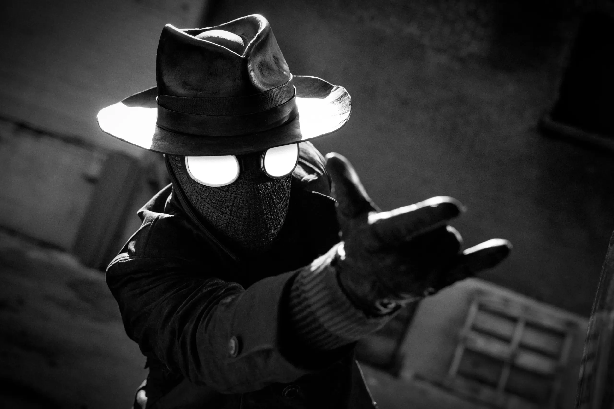
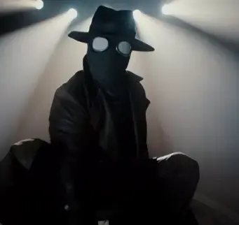

Spider Noir Homem-Aranha de Nicolas Cage é revelado com primeiras imagens
10/02/2026
Sim, as primeiras imagens oficiais de Nicolas Cage como o Homem-Aranha na série live-action "Spider-Noir" (ou Homem-Aranha Noir) foram reveladas hoje, 10 de fevereiro de 2026.
Aqui estão os principais detalhes revelados com as imagens:
O Visual: Nicolas Cage aparece caracterizado com o icônico sobretudo e chapéu dos anos 30, mantendo a estética sombria e clássica das HQs e do filme Aranhaverso.
A Identidade: Foi confirmado que o personagem de Cage será Ben Reilly (e não Peter Parker), um detetive particular envelhecido e azarado na Nova York da Grande Depressão.
Estilo Visual Único: A série será disponibilizada em duas versões: uma totalmente em preto e branco e outra colorida (com cores hipersaturadas), permitindo que o público escolha a experiência que preferir.
Vilão Confirmado: Além das fotos de Cage, foi revelado que o ator Jack Huston interpretará Flint Marco, o Homem-Areia, que será um capanga e antagonista na trama.
Estreia e Onde Assistir: A série tem previsão de lançamento para a primavera de 2026 (entre março e maio) no Prime Video.
A produção conta com oito episódios e tem no elenco nomes como Brendan Gleeson (como um chefe da máfia), Lamorne Morris (Robbie Robertson) e Li Jun Li.